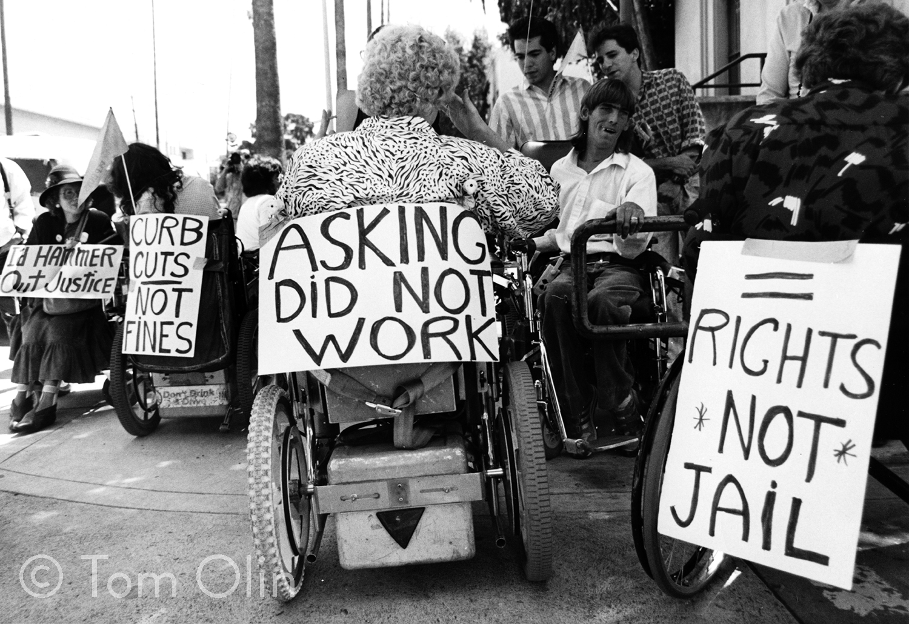
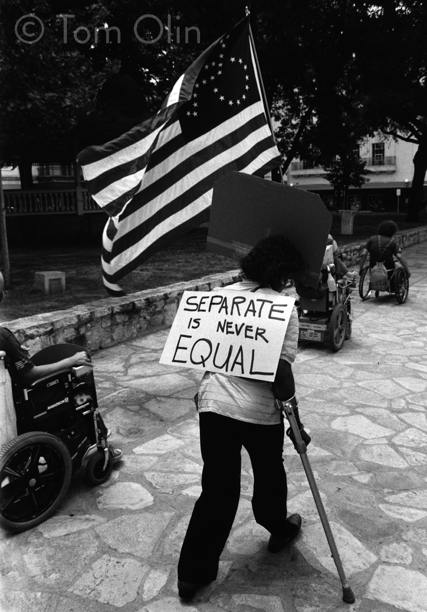
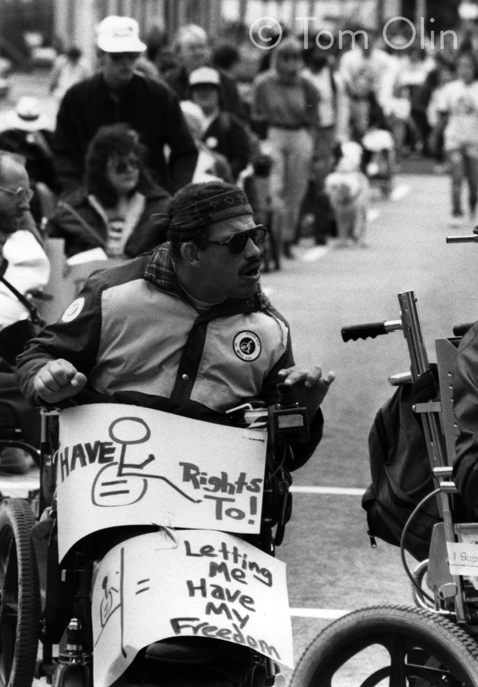

About this project
The Americans with Disabilities Act is national recognition that access is a civil rights issue and that people with disabilities should be protected from discrimination in all areas of public life, including jobs, schools, transportation and all other places that are open to the general public.
President George H.W. Bush signed the ADA into law on July 26, 1990. Its purpose is to ensure that people with disabilities have the same rights and opportunities as everyone else.
Thirty years later — as we are amid a civil rights movement attempting to again address persistent racism — we ask: Has the ADA worked for people with disabilities in Southwestern Pennsylvania? What work is left to be done?
Protesters demand curb cuts along Hollywood’s “Walk of Fame” in Los Angeles, calling it a “Walk of Shame,” on March 5, 1988. (Used by permission. © Tom Olin – Tom Olin Collection.)
Pittsburgh-based media organizations PublicSource and Unabridged Press have partnered to bring you the voices of people with disabilities through reported articles and first-person essays, podcasts and video.
Each story was either written directly by a person with a disability or employed an adviser or producer with a disability to evaluate the final product for ableism and to ask questions and make suggestions based on their expertise and experiences.
We have also made efforts to make this website — ADAPittsburgh.com — accessible through researching the best online tools, running audits on the site’s accessibility and asking users with various disabilities to test with us. That’s not to say we’ve got website accessibility down pat, so we embedded a form on each page soliciting comments or concerns.
You can also email halle@publicsource.org directly with any feedback. We hope to take what we learn about accessibility measures for this project and apply it to our primary websites and future projects.
A final note: Often, work by and about the disability community is only shared within the community of people with disabilities and their families and advocates. It shouldn’t be that way. The Americans with Disabilities Act is one of the most sweeping pieces of social legislation this country has ever seen and the implications are widespread. Please share this project with your friends, family and others who may not otherwise see it. Thank you!
 Left: A Centers for Independent Living director carries a sign that read "Separate is never equal' by The Alamo in San Antonio in 1985.
Right: Activist George Rogers marches down Martin Luther King Jr. Drive in Atlanta in 1990. The action called for Atlanta to implement community-based attendant services, which would allow people with disabilities to live at home instead of in nursing homes. (Used by permission. © Tom Olin – Tom Olin Collection.)
About Unabridged Press
“The whole story from the whole person.” That’s the tagline of the Pittsburgh-based website Unabridged Press. It publishes podcasts, videos, editorials, and written news and feature reporting, primarily about disability issues. A majority of contributors are people with disabilities.
This inclusive disability coverage began when a woman with Down syndrome, Erin Gannon, voiced her dream to be on the radio. She’s since won two Press Club of Western Pennsylvania Golden Quill awards for her podcast interviews and now works in the marketing department of the nonprofit ACHIEVA.
Unabridged Press is a for-profit company with B-Corp principles: a triple bottom line of people, profit and planet. It’s published by longtime Pittsburgh broadcaster Jennifer Szweda Jordan (formerly of The Allegheny Front/90.5 FM WESA). Its collaboration with the Center for Media Innovation at Point Park University, called the All-Abilities Media Project, teaches digital journalism to people with disabilities. It’s a pipeline for careers at Unabridged Press and other workplaces.
About PublicSource
PublicSource inspires critical thinking and bold ideas through local journalism rooted in facts, diverse voices and pursuit of transparency. We tell stories for a better Pittsburgh.
PublicSource has been serving the community with mission-driven and impact-minded reporting since 2012.
We, at PublicSource, believe in rebuilding local journalism from the community up. And we trust that our readers know more than we do. We are committed to working together with readers to help them advance the causes that matter most to them whether it’s the environment, jobs, economy, education, healthcare or social justice.